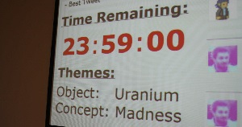
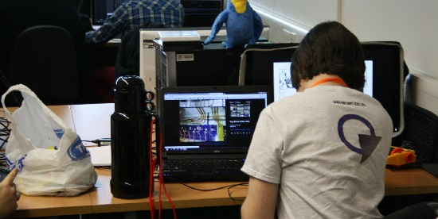
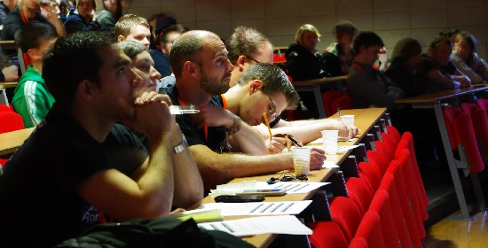

Lincoln University #CanJam13
Mar 16, 2013 · 3 minute read · CommentsGeneral

Last weekend I went to Lincoln University to attend #CanJam13, a 24h game jam organized by some members of the Computing Society over there. They kindly asked some people from Crytek and Rockstar to do the judging and provide the students with some advice during the competition. Waking up early during the weekend is never ideal but hey, those students were about to pull an allnighter! It"d have been really inconsiderate not to show up.
I don’t regret it a single bit.

The atmosphere was highly inspirational: two games labs full of equipment, a projector with the hilarious #CanJam13 Twitter timeline and a countdown, pizza, loads of caffeine and extreme time management. People worked together in teams of up to four members to deliver something playable that fitted with the theme: Uranium + Madness. Overall, there were around 70 students up for the challenge. I was pleasantly surprised to see many first year students joining the jam using tools like Unity or Game Maker. C#/XNA and C++/SFML were popular choices as well. It struck me hard when I realised I only got to make text adventures and a lame Nintendo DS prototype during my first year as an undergrad student.
Getting things done from the very beginning, that’s the spirit.

After talking to the students I also got to have a chat with the organisers, who make a tremendous effort to pull these things off. #CanJam13 was their second edition but they also offer week long jams and all sorts of events. From where I stood, everything was flawless, so kudos! I can tell, from my experience with the Games Development Society we founded back at my home uni, that the time investment needed is huge. Oh, how I wish I had more sweet stuff like that back then.
I already knew Tom Feltwell“s face, a MSc student who works in the school of Computing Science. He came to Crytek UK some time ago to deliver a presentation about his awesome work on game metric analysis. I was also pleased to meet Olivier Szymanezyk, a PhD student who showed me his impressive crowd simulation. Up to 3K entities walking around an airport with their individual destinations and social groups.
At some point during Sunday morning, the countdown reached the feared zero mark and everyone had to have submitted. I got there just in time for have some food and a pint before the presentations. Obviously the games were simple and rough but don’t get me wrong! Delivering interesting games from a design standpoint in under 24h is brutal and there were many good ideas. The organisers told me they were going to send me the links, so I"ll post them as soon as I get them. In the meantime, check this video of one of the games and maybe dig into some of the interviews that were filmed.

Lately, I’ve talked about how important to get shit done is and how game jams can help you to achieve that goal. The students who joined the #CanJam13 were doing just that. Some of them are also taking part in One Game A Month, which is also brave, since they"ll need every time they can get for uni assignments and dissertations.
Hats off!
Undoubtedly, a great experience I"d like to repeat next year if possible.